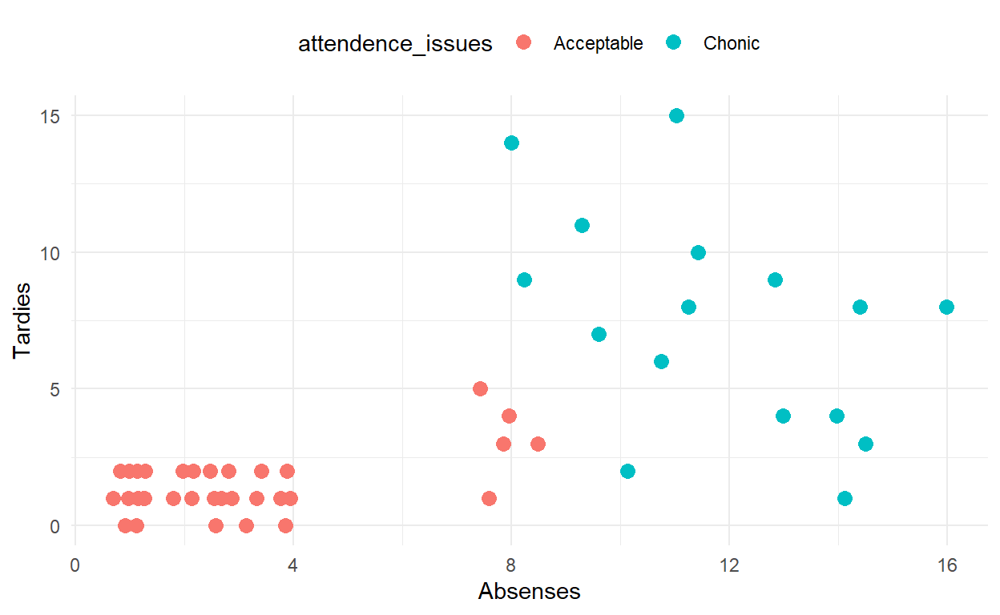

Most commonly, when I’m trying to convince someone to try to learn R, they ask me why? They’re already comfortable with excel, and have processes for their reports, and data manipulations. I understand that, when I first started learning R it was for one purpose, to do Machine Learning that I couldn’t expect Excel to do. I did all of my data exploration, cleaning, and manipulating in Excel, as I as familiar with the interface and knew the shortcuts.
My pitch for using R more is pretty simple, it let’s you do more, faster. Using R you can create reproduceable reports, and functions to enable you to run the report on new data with ease. You can do excel reports that take an hour to calculate in a handful of seconds.
In Excel, your pipline/process is usually
In R your process can be
VBA is a powerful tool that enables automated reports and calculations to reduce manual errors in an Excel report. It’s native to Excel and can be used to keep your work entierly in Excel. It is however, difficult to get started with, slower, and not nearly as well documented as R. This is because R is designed for data. R is a statistics language and optimized to work with data, where as VBA is designed to be a basic programing interface. VBA mimics how a human would have to approach the process, where as R can manage the problem in a progmatic manner.
To demonstate this, lets take a look at this example problem. You have to calculate if a student is experiencing chronic attendence issues. You want to add a new column where the value is chronic if they have more then 10 attendence issues, with 4 tardies = 1 absense. Your spreadsheet looks like this.
Sub addNewColumnCalc()
Dim LastRow as Long
LastRow = .Cells(.Rows.Count, "A").End(xlUp).Row
Selection.End(xlToRight).Select
Range("F1").Select
ActiveCell.FormulasR1C1 = "AttendenceIssues"
Range("F2").Select
ActiveCell.ForulaR1C1 = "IF((RC[-2]-RC[-1]/4)>=10, ""Chronic"", "Acceptable"")"
Selection.FillDown
Selection.Copy
Selection.pasteSpecial Paste:=xlPasteValues, Operation:=xlNone, SkipBlankes:=False, Transpose:=False
End Sub
And in R it could look like:
attendence_data <- attendence_data %>%
mutate(attendence_issues = if_else(Absenses + Tardies/4 >= 10, "Chonic", "Acceptable")) Which is clearly much simpler and easier to read.
You can also make much more dynamic plots in R vs Excel, and tweek more options to capture the story that your data tells. We’ll dive into plotting later, with a focus on the ggplot2 package
For example this was a fairly simple plot to make using R, that would take a few minutes of clicking around in excel to produce a similar result.
attendence_data <- attendence_data %>%
mutate(attendence_issues = if_else(Absenses + Tardies/4 >= 10, "Chonic", "Acceptable"))
attendence_data %>%
ggplot(aes(x=Absenses, y= Tardies, color=attendence_issues))+
geom_point(size=3)+
theme_minimal()+
theme(legend.position = "top")
I hope by now you’re at least a little intriuged about using R to incease your productivity and eliminating your frustrations with work. R is more readable, repoducable, and easier to maintain between users than that old .xlsxm file that gets emailed around between all your users.
R like many other programing languages has a Console which can be used by the user to exicute various commands. In R Studio, the console is one of the panes you can have open and is open by default. We can also run Scripts which are like the console, except they hold multiple commands to be run repeatedly. This tutorial uses the learnr package to provide an interface for you to get used to R. This will function as your console.
Give it a try, I’ve left you a message. To read it, type print(message) in the following code chunk.
So what can we do in the R console? Much like formulas in excel, we can use R as an overly complicated calcuator. R knows basic arithmatic and you can type a calcuation and r will provide a result. You can ask it what 2+2 is or what 3*10 is and it will get you the answer.
R undersands
+-*/^)mean(c(x1,x2,x3)), median(c(x1,x2,x3))log(x, base = exp(1), exp()) )sqrt(x))Note that for averaging, R needs a Vector instead of just comma seperated values in excel. A Vector is very easy to create, you just c combine comma seperated values into a vector using c(item_1, item_2, ... item_n)
Why don’t you create a vector of this list, “10, 14, 2, 5, 5, 2, 15, 14, 12, 11, 13” and store it as first_vector. We can store values as variables by using the <- operator like so.
example_variable <- "A value"
print(example_variable)## [1] "A value"Now give it a shot. Create a vector named first_vector and set it’s values to the ones provided above and find the mean and median.
first_vector <- c(1)
mean_value <- mean(1)
median_value <- median(1)Using the r console, find the answer to the following set of problems.
As mentioned above, we can store values with a name, This is called a variable. This is similar to doing a calculation adn stoing it in a specific cell to reference later. As mentioned before, it’s best practice to assign values the variable. Variables can be single values, or data structures with multiple values like vectors.
In general, your variable names should be descriptive and clear. There are a few different ways to style your variables, but you should strive to be consistant. The tidyverse style guide reccomends using an underscore to seperate words in a variable name. This is called snake_ _case. Google’s R style guide uses BigCamelCase. It’s important to have a consistant convention so that way you can quickly access your variables and make it easier for others to read.
Some limitations on variable names
Vectors are a list of values that are strung together. We can use these to hold a colection of numerical, or character data. For numeric values we have some built in functions to summerise them. These are very similar to using the formulas in excel to do calcuations over a range.
sum(x) sums the totallength(x) gets the number of values in the vectorsmean(x) finds the meanvar(x) calculates the varience of the vectorsd(x) calculates the standard deviationmax(x) finds the largest valuemin(x) finds the smallest valuemedian(x) finds the mediany = sort(x) Sorts the values in acending ordervalues in a list are indexed which means you can access a specific value if you need to by using square brackets after the vectors name like in the following code chunk.
my_vector <- c(1,3,6,9,12,15)
print(my_vector[4])## [1] 9